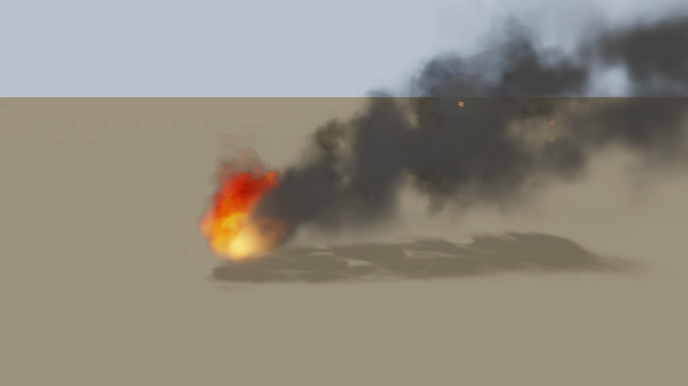

Volumetric fire and smoke
A graph controls combustion, smoke motion and shadows. A moving source leaves smoke within the authored domain.
Engine systems / SpectraFX VFX
Particle effects
Particles, ribbons, smoke, fire and explosions from effect graphs, with CPU and GPU emitters and ECS event bindings.
in development since Oct 28, 2026

A graph controls combustion, smoke motion and shadows. A moving source leaves smoke within the authored domain.
A typed graph v2, function subgraphs, variants and hot reload.
A CPU particle backend and GPU particles on Metal.
Effect sources from entities, events and cue scheduling.
A visual graph editor in Studio and authoring through MCP.
Shared material batching across effects.
Unity ParticleSystem modules and effect import from Unity.
Additive model materials, shadow-casting control and particle addition after tone mapping.
Connect particle graphs to native scene rendering, depth handling, and verified editor previews.
Add an editable effect graph and show it in the native preview.
A model effect can disable shadow casting while preserving its material.
 Nov 27, 2026Model shadows and additive effectsEffect models can disable shadows. Materials support two additive modes, and particles can add their contribution after tone mapping.
Nov 27, 2026Model shadows and additive effectsEffect models can disable shadows. Materials support two additive modes, and particles can add their contribution after tone mapping.
Nov 25, 2026Motion inside the smoke plumeGrey billows travel up the plume with thinner gaps between them. Nov 25, 2026Smoke trails from moving sourcesSmoke remains in the air and continues rising after its source passes.
Nov 25, 2026Smoke trails from moving sourcesSmoke remains in the air and continues rising after its source passes. Nov 24, 2026Volumetric particles in scenes and StudioVolumetric particle graphs now appear in game scenes and Studio preview. Depth-aware particles join the HDR frame after geometry rendering.
Nov 24, 2026Volumetric particles in scenes and StudioVolumetric particle graphs now appear in game scenes and Studio preview. Depth-aware particles join the HDR frame after geometry rendering. Nov 24, 2026Volumetric smoke and layered fireSpectraFX now has a fire example with a volumetric smoke plume, layered flames and sparks. The visible vertical banding is absent from the captured frame.
Nov 24, 2026Volumetric smoke and layered fireSpectraFX now has a fire example with a volumetric smoke plume, layered flames and sparks. The visible vertical banding is absent from the captured frame. Nov 24, 2026Angled fire and smoke plumeThe fire stays near its source while a dense dark smoke plume rises diagonally, with occasional glowing embers inside.
Nov 24, 2026Angled fire and smoke plumeThe fire stays near its source while a dense dark smoke plume rises diagonally, with occasional glowing embers inside.Other systems